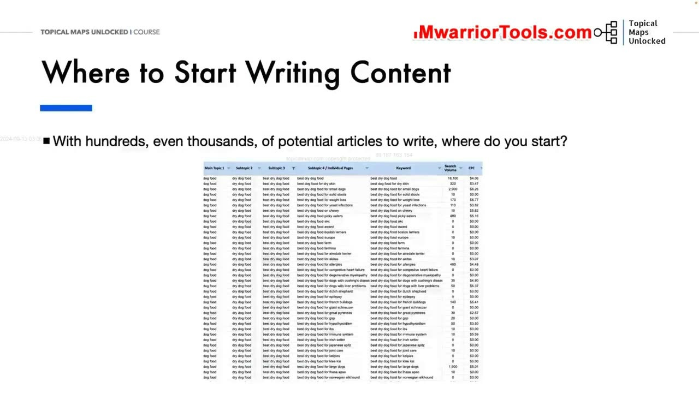
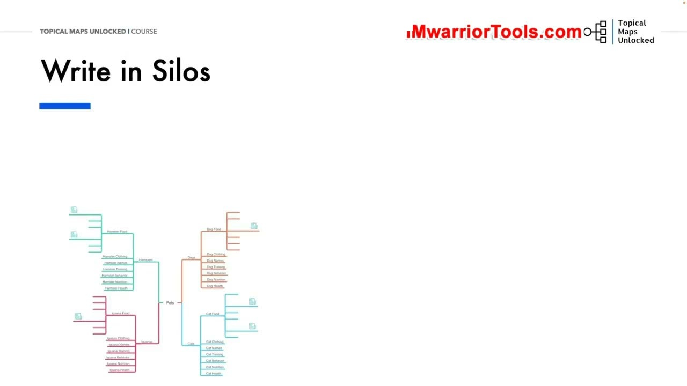
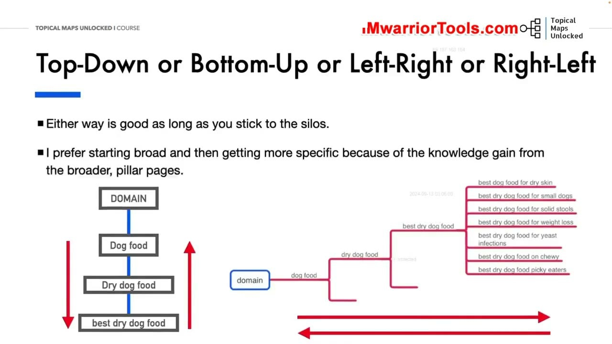

Where to Start Writing Content
1. Thế lưỡng nan khi bắt đầu: Đứng trước hàng ngàn bài viết thì nên viết bài nào trước?
Khi hoàn thành bản đồ chủ đề và kế hoạch nội dung, bạn sẽ có trong tay một danh sách khổng lồ gồm hàng trăm, thậm chí hàng ngàn bài viết tiềm năng cần phải sản xuất. Lúc này, một câu hỏi lớn mang tính quyết định thường làm bối rối rất nhiều người làm website: Nên bắt đầu viết bài từ đâu? Đâu là thứ tự ưu tiên xuất bản tối ưu nhất?
Nếu bạn xuất bản một cách ngẫu hứng, mỗi chuyên mục viết một bài rải rác, website của bạn sẽ mất rất nhiều tháng trời mà không thể tạo dựng được thẩm quyền chuyên môn ở bất kỳ ngách nào.

2. Nguyên tắc vàng: Viết bài trọn vẹn theo từng Silo (Write in Silos)
Yoyao đưa ra lời khuyên chiến lược quan trọng nhất: Luôn luôn viết và xuất bản bài viết theo từng Silo trọn vẹn (Write in Silos)!
Thay vì viết lan man mỗi danh mục vài bài, bạn hãy chọn ra một Silo chủ đề cốt lõi duy nhất (ví dụ: toàn bộ các bài viết về Thức ăn khô cho chó - Dry Dog Food) và tập trung toàn lực xuất bản liên tục cho đến khi hoàn thành trọn vẹn 100% các bài viết trong Silo đó.
Lý do chiến lược: Khi toàn bộ một Silo được xuất bản hoàn tất cùng với mạng lưới liên kết nội bộ chặt chẽ khép kín, Google sẽ ngay lập tức nhận diện website của bạn có sự bao phủ chủ đề toàn diện ở mức độ chuyên gia trong ngách nhỏ đó, giúp bài viết nhanh chóng có thứ hạng trang nhất chỉ sau thời gian ngắn.

3. Hai chiến lược tiếp cận trong Silo: Từ trên xuống (Top-Down) vs Từ dưới lên (Bottom-Up)
Khi đã chọn được Silo mục tiêu, bạn có thể triển khai xuất bản theo một trong hai hướng tiếp cận:
- Chiến lược Từ trên xuống (Top-Down / Trái sang Phải): Bắt đầu viết từ Trang trụ cột bao quát Level 1 trước, sau đó viết dần xuống các bài viết phụ Level 2, 3 và các bài chi tiết Level 4. Yoyao cho biết ông thích phương pháp này hơn vì việc nghiên cứu và viết trang trụ cột bao quát giúp người viết tích lũy được nền tảng kiến thức sâu rộng về toàn ngành, từ đó viết các bài con sau này trở nên vô cùng dễ dàng và sâu sắc.
- Chiến lược Từ dưới lên (Bottom-Up / Phải sang Trái): Bắt đầu viết các bài viết ngách chi tiết Level 4 có độ cạnh tranh thấp và nhiều điểm yếu SERP trước, sau đó mới viết trang trụ cột tổng hợp sau cùng. Ưu điểm của cách này là website có thể có lượng truy cập tự nhiên đầu tiên sớm hơn từ các từ khóa đuôi dài.
Yoyao kết luận: Cả hai hướng tiếp cận đều mang lại hiệu quả xuất sắc, miễn là bạn kiên trì tuân thủ kỷ luật: Bám sát trọn vẹn từng Silo cho đến khi hoàn thành 100% trước khi chuyển sang các chủ đề khác!

Nguồn và đối chiếu
- Topical Maps Unlocked 2.0 · 05-Where to Start Writing Content (Video bài học chính).
- Bản tiếng Anh không có video riêng cho bài học này; nội dung đối chiếu trực tiếp từ slide và video chính.